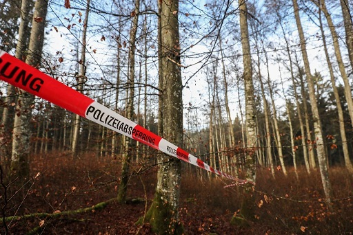

Leiche im Wald ist identifiziert Von Nadine Klossek 26.10.2017 - 15:50 Uhr
Bei dem Toten handelt es sich um einen 75-jährigen Mann aus Bad Krozingen, der seit dem 12. Juli 2016 vermisst war. (Symbolfoto) Foto: Marc Eich Bei dem Toten handelt es sich um einen 75-jährigen Mann aus Bad Krozingen, der seit dem 12. Juli 2016 vermisst war. (Symbolfoto) Foto: Marc Eich Furtwangen - Nach dem Knochenfund vor vier Wochen kamen Stück für Stück weitere Details über den rätselhafen Fall ans Licht. Seit Donnerstag gilt er nun als abgeschlossen: Die Polizei hat den Unbekannten identifiziert – und geht von Selbstmord aus.
Bei uns finden Sie eine große Auswahl an ...... Tageszulassungen und Vorführwagen zu Topkonditionen. Darunter befinden sich auch interessante Allradfahrzeuge und Transporter. War es Mord? Wurde der Leichnam zerstückelt und im Wald abgelegt? Oder hat sich auf tragische Weise jemand das Leben genommen? Seit Anfang Oktober durch Zufall bei einer Drückjagd Menschenknochen im Katzensteig gefunden wurden, kocht die Gerüchteküche in Furtwangen.
Doch nun scheinen die Spekulationen ein Ende zu haben: Die aus den Knochen gewonnene DNA konnte beim Landeskriminalamt in Stuttgart einem Vermissten zugeordnet werden. Der Fall ist gelöst, wie die Polizei am Donnerstag mitteilte.
Der Unbekannte aus dem Katzensteig ist demnach ein Mann aus Bad Krozingen. Am 12. Juli 2016 wurde der zu dieser Zeit 75-Jährige als vermisst gemeldet. "Der Mann hat damals einen Abschiedsbrief hinterlassen mit dem Vermerk, man werde ihn nicht finden", erklärt Dieter Popp, Pressesprecher beim Polizeipräsidium Tuttlingen. Er habe sich damals wohl zu Fuß aus Bad Krozingen entfernt.
Die Suche nach dem Vermissten fiel indes in den Zuständigkeitsbereich des Polizeipräsidium Freiburg. Wie Pressesprecherin Laura Riske mitteilte, wurde im Jahr 2016 intensiv nach dem Vermissten gesucht, unter anderem wurden Krankenhäuser und Taxiunternehmen kontaktiert. Die Polizei ging davon aus, dass er aufgrund persönlicher Probleme Suizid-Gedanken hatte. Schon damals, so Riske, habe man sich auch an die Furtwanger Bergwacht gewandt.
"Er hat einen Bezug nach Furtwangen gehabt", ergänzt Popp. Dieser war den Ermittlern demnach bereits zum Zeitpunkt des Verschwindens bekannt. Wie genau dieser Bezug aussah, konnten beide Pressesprecher nicht näher definieren, der Verstorbene sei allerdings nicht gebürtig aus Furtwangen.
Aufgrund der Umstände geht die Polizei nun davon aus, dass sich der 75-Jährige von Bad Krozingen nach Furtwangen begab und sich im Katzensteig das Leben nahm. Über die Umstände, wie genau seinem Leben ein Ende setzte, kann nur spekuliert werden. Man habe keine Waffe in der Nähe des Leichnams gefunden, meint Popp. Dafür hingegen andere Gegenstände, wie Riske ergänzt: "In der Nähe der Knochen wurden Flaschen und leere Tablettenblister gefunden."
Dennoch: Wann sich der Mann umbrachte und ob er Tabletten und Alkohol hierfür nutzte, ist nicht endgültig geklärt. Da es laut Polizei keine Anzeichen auf Fremdeinwirkung gibt und alles für einen Selbstmord spricht, werden keine weiteren Ermittlungen diesbezüglich angestrebt. Der Fall gilt als abgeschlossen.